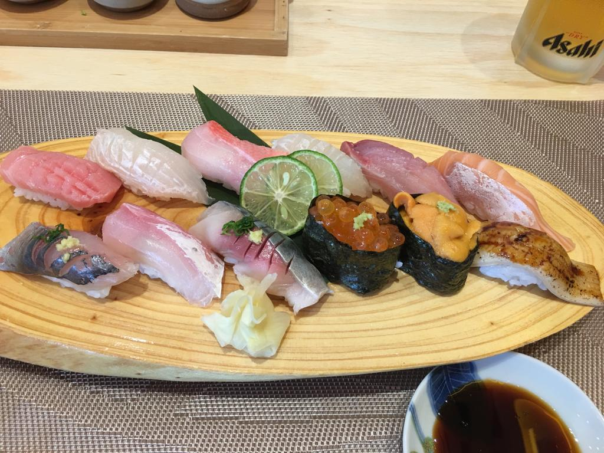
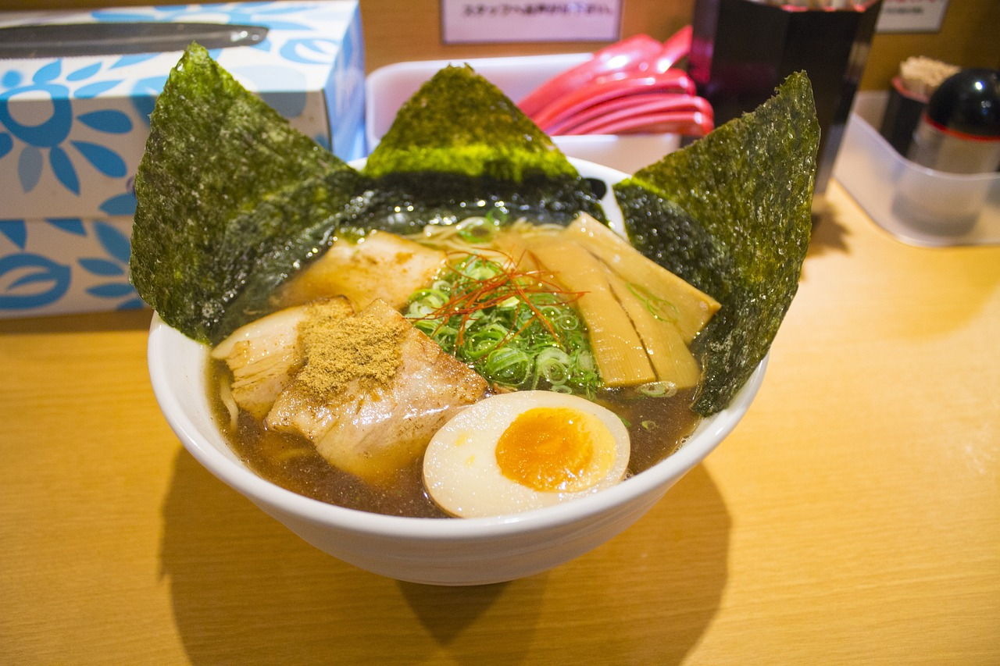
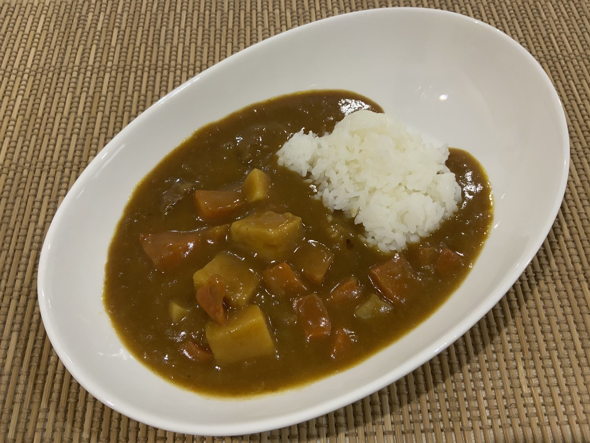
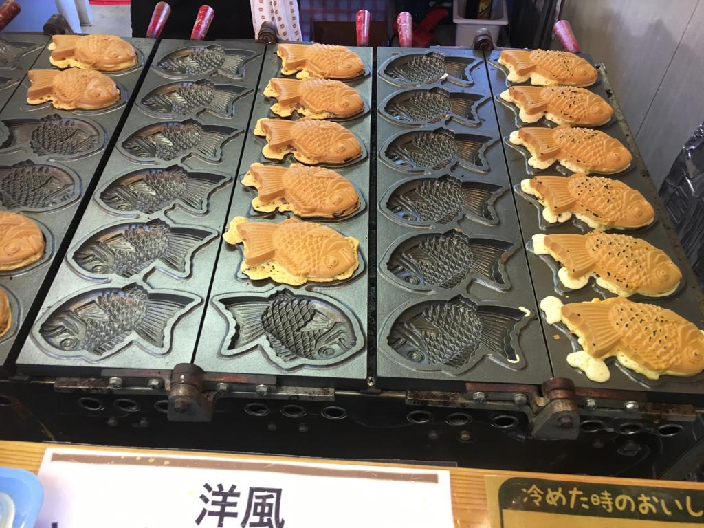

Japan is known for its vast array of food, much of which you can get right in Tokyo. Below is a short list of some of the must eat foods whilst in Japan!
- Sushi 
- When people are asked about Japan, sushi is often the first thing that comes to mind. One of Japan's most iconic dishes, sushi is essentially rice, nori, and seafood or vegetables, often raw fish (sashimi). There are hundreds of types of sushi, with prices and values ranging across Tokyo. Click the image above to see different types of sushi!
- Ramen 
- Ramen is another dish popular not only in Japan, but around the world. It is typically comprised of a soup base, wheat noodles, and a variety of toppings (nori, bamboo, naruto, chasu pork, ajitama egg etc). Click the image to see the different types of ramen!
- Curry 
- Curry, although less popular overseas, is the official national dish of Japan. It is a regular in most households, loved by many for its delicious flavors. Curry is usually comprised of chicken, potatoes, carrots, mushrooms, onions, and the iconic curry flavor tablets.
- Okonomiyaki
- Okonomiyaki are savory pancakes often found as street found throughout Japan. They are primarily made of cabbage, topped with Japanese mayonaise, okonomiyaki sauce, green onions, and bonito flakes. In Tokyo, especially Asakusa, you will often be able to grill your own okonomiyaki right at the dinner table!
- Taiyaki 
- Taiyaki are fish-shaped cakes, an essential part of Japanese matsuri culture. During festivals, taiyaki stalls will often be the most packed! They come with several fillings, from traditional red bean to custard and chocolate.
Licensed under Pixabay License
Licensed under Pixabay License

Licensed under Pixabay License
for information on where to find the aforementioned foods in different parts of the city, click here!